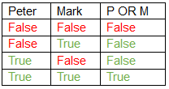
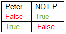

Logs:
No Errors
Create 3 circuits:
Left circuit truth table is:
| A | B | A&B |
|---|---|---|
| 0 | 0 | 0 |
| 0 | 1 | 0 |
| 1 | 0 | 0 |
| 1 | 1 | 1 |
Middle circuit table is:
| A | B | A|B |
|---|---|---|
| 0 | 0 | 0 |
| 0 | 1 | 1 |
| 1 | 0 | 1 |
| 1 | 1 | 1 |
Right circuit truth table is:
| A | B | !(A&B) |
|---|---|---|
| 0 | 0 | 1 |
| 0 | 1 | 0 |
| 1 | 0 | 0 |
| 1 | 1 | 0 |
(it requires to use 2 gates)
No Errors
Left circuit truth table is:
| A | B | A&B |
|---|---|---|
| 0 | 0 | 0 |
| 0 | 1 | 0 |
| 1 | 0 | 0 |
| 1 | 1 | 1 |
Middle circuit table is:
| A | B | A|B |
|---|---|---|
| 0 | 0 | 0 |
| 0 | 1 | 1 |
| 1 | 0 | 1 |
| 1 | 1 | 1 |
Right circuit truth table is:
| A | B | !(A&B) |
|---|---|---|
| 0 | 0 | 1 |
| 0 | 1 | 0 |
| 1 | 0 | 0 |
| 1 | 1 | 0 |
(it requires to use 2 gates)
In order to understand computers and how they work we need to get back to reasons for which they were invented.
Computer is a machine that can be instructed to carry out sequences of arithmetic or logical operations. Nowadays computers evolved so much that it seems impossible to grasp the logic which works behind the scenes.
Truth is that architecture of computers didn’t change much since first generation of computers 75 years ago. Since then we managed to produce smaller and better-quality parts which increased processing power and memory capacities but didn’t really change how computers work – they still perform simple arithmetic and logical operations.
Designing more advanced programs enabled translating real live problems into mathematical operations, produced outcomes are presented as solutions for those problems. This approach allowed computers to be used in every aspect of human life but at same time preserved core principles that were used in inventing first unit.
Objective of this course is presentation of mentioned principles and how are they used in computer construction.
In order for computers to perform logic and algebraic operations, problems need to be translated into computer language which is Boolean algebra.
This language uses variables that take only two possible values which are true and false. Main operations of Boolean algebra are the conjunction (and) denoted as ∧, the disjunction (or) denoted as ∨, and the negation (not) denoted as ¬. To make it easier to understand we will use example:
Two variables are two persons: Mark and Peter, lets consider a case where they go to shop, the values which they can take are: went to shop, or didn’t go to shop (true or false), operation AND would be question: did they both go to shop?
Answer for this question would be only TRUE if Peter went to shop(true) and Mark went to shop(true). There might be different cases were only one of them went to shop or none of them went to shop, which outcome for the operation would be FALSE. All those cases can be presented in Truth tables:
If we ask different question: Did Mark or Peter went to shop? We would construct OR operation which outcome would be true if any one of them went to shop or both went to shop, and table would look like:
Negation is used to change single value to its opposite so table would look like:
Those three basic operations are basic fundamentals on which all computer logic is built on.
To implement Boolean logic into computers we use electric currents which are represented as True for high voltage and False for low voltage. Operations are different type of transistors which connected to inputs will produce output as high or low voltage respectively to operation they represent. Those transistors are called gates and their symbols are:
AND Gate
OR Gate
NOT Gate
So far, we mentioned only 3 type of operations – 2 basic and 1 negation. In next tutorials we will use other operations all of which can be constructed with use of AND OR NOT operands.
In this tutorial we will connect 3 basic gates to inputs and outputs to observe how they respond to input changes and create more advanced XOR gate.